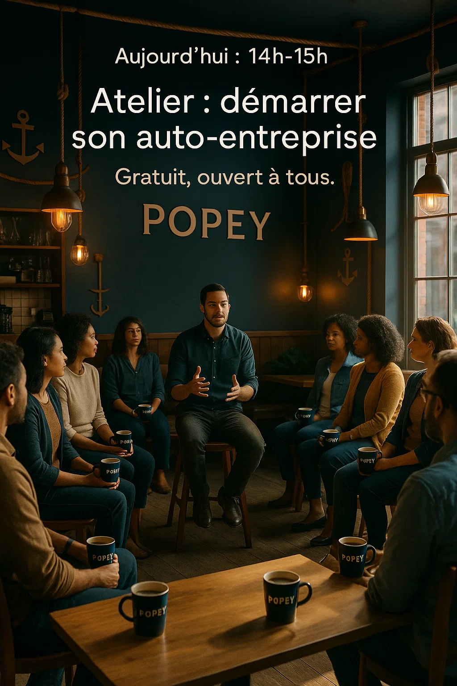
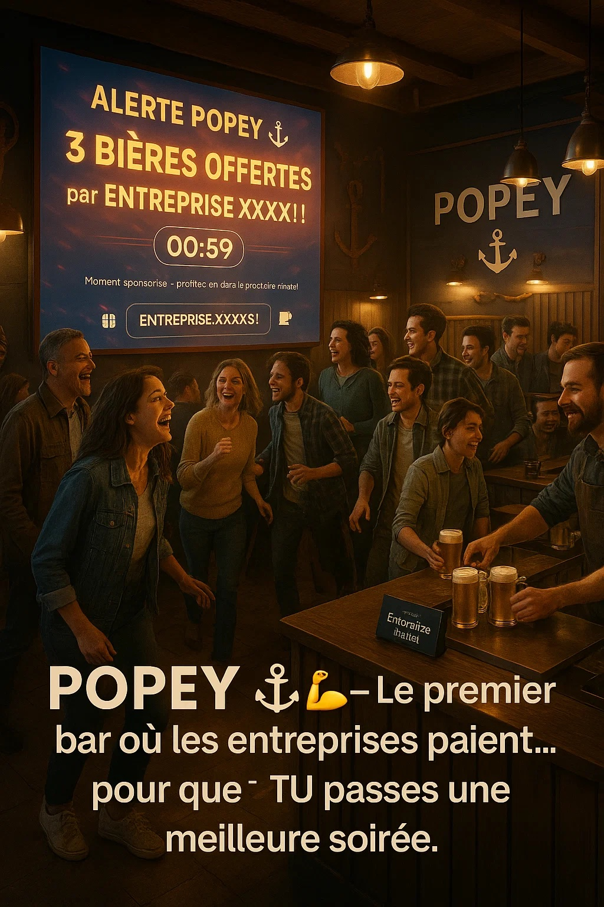
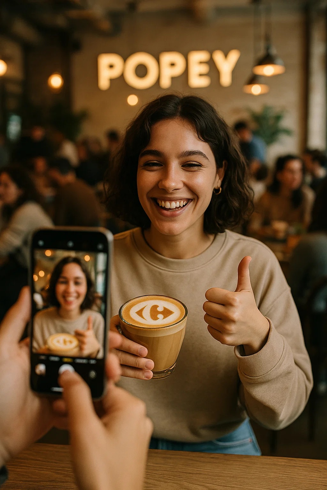

POPEY c'est
☀️ Le jour
- POPEY est un coffee shop qui réunit plusieurs expériences complémentaires :
- Un coffee shop premium, chaleureux et acceuillant.
- Un espace d’ateliers en continu, proposé par des talents locaux.
=> De 8h à 12h puis de 14h à 18h, huit créneaux d’une heure sont proposés dans un espace de 50 m², chacun animé par un expert : coachs, thérapeutes, freelances, artisans, artistes, etc.
Bénefices pour les clients : ils accèdent gratuitement aux ateliers : ils règlent uniquement leur boisson.
Bénefices pour les talents locaux : ils présentent leurs produits/services, testent leurs offres et construisent leur clientèle.
Bénefices pour Popey : Ce fonctionnement crée un flux continu de visiteurs tout au long de la journée.
- Un mur digital interactif qui permet aux clients :
* de découvrir les professionnels et entreprises de la ville à prix réduit,
* de suivre et soutenir les projets émergents de jeunes talents,
* d’interagir directement sur leur profil en likant, en offrant un café d’encouragement ou en réservant un service.
🌙 Le soir
- Bar Ambience
Détente & musique douce
Ambiance : lounge, cocooning, éclairage tamisé, cocktails bien-être
Public : curistes + trentenaires + actifs cherchant un lieu calme et chic
Cocktails à base d’infusions, herbes, produits naturels
Tapas légers / sains
Mobilier confort (fauteuils, banquettes, ambiance chill)
Playlist soul / jazz / electro-chill
POPEY est un lieu :
✔ utile
✔ social
✔ fédérateur
✔ un lieu qui crée de la valeur pour la ville et pour les habitants



Le mur digital

Les ateliers

les flashs sponsors

☕ Pour les clients de passage
- Une sélection de cafés de qualité, boissons chaudes et froides, préparées avec soin.
- Une offre repas gourmande et rapide : menus du midi, salades fraîches, tartes, hot dogs revisités, desserts maison… idéal pour une pause efficace.
- Accès à des offres locales exclusives (prix réduits, tests produits, échantillons…).
Ateliers renouvelés toutes les heures, offrant une expérience nouvelle à chaque visite.
=> Possibilité d’assister à un coaching express pendant sa pause café. - Possibilité de laisser des demandes, des messages... à nos talents locaux sur les murs Popey.
=> Possibilité de soutenir un projet local pour le prix d’un café. - Petit espace coworking non officiel, parfait pour travailler 1 heure entre deux rendez-vous.
💼 Pour les talents locaux
- 100 places disponibles, réservées aux professionnels souhaitant développer rapidement leur visibilité et leur clientèle.
- Réseautage privilégié entre talents : un petit-déjeuner est organisé chaque jeudi matin pour créer des collaborations, synergies et opportunités.
- Accès direct à une clientèle qualifiée : les clients POPEY (habitués, travailleurs, touristes, habitants de Dax) deviennent des prospects naturels grâce aux ateliers gratuits qu’ils découvrent chaque heure.
- Mise en avant sur le mur digital interactif, visible par tous les clients de passage : présentation, coordonnées, offres exclusives, avis…
- Accompagnement à la construction de leur clientèle : POPEY devient une vitrine vivante où les clients découvrent et soutiennent les talents locaux.
- Nous estimons qu’un talent peut générer entre 150 € et plus de 300 € de nouveaux clients par mois, simplement grâce à sa présence au sein de POPEY (ateliers + mur digital + flux continu). Notre objectif est de représenter tous les corps de métiers, toutes disciplines confondues, pour atteindre 100 talents locaux au sein du réseau POPEY.
🏪 Le Mur Popey
- Le mur Popey c'est un mur physique augmenté où chaque talent local peut être activé par le client de passage afin d'initier un contact ou une interaction immédiate
- Chaque plaque "Talent" est équipée d’un capteur tactile et d’un bouton rétroéclairé.
- Quand un client touche la plaque du coworker :
💡 La plaque s’illumine en animant les contours ou une LED intégrée.
🎥 Un écran diffuse une courte vidéo de présentation du coworker.
📱 Un QR code personnalisé s’affiche pour :
Lui envoyer un message
Prendre rendez-vous
Lui offrir un café d'encouragement
Consulter ses avis / réalisations
NB : Les clients peuvent aussi laisser un sticker virtuel pour expliquer leurs besoins
🥤 les Flash sponsors : Un systeme de gratuité innovant
- Chez POPEY, nous avons imaginé un moyen unique pour les entreprises locales de toucher 100 % des clients tout en créant un moment fort, positif et mémorable.
- Les Flash Sponsors, ce sont des instants — en journée ou en soirée — durant lesquels une entreprise locale offre des boissons gratuites à tous les clients présents. Un geste marquant, qui associe la marque sponsor à une expérience généreuse et inoubliable.
- Ce système crée : une visibilité immédiate et massive, une association émotionnelle positive entre la marque et les clients, un bouche-à-oreille puissant, et un outil marketing innovant, accessible à toutes les entreprises, même les plus petites.
🤝 Ateliers + Gratuité = Gagnant-Gagnant

POPEY fonctionne (et se démarque) par une fréquentation forte & continue.
Le modèle "ateliers" + “gratuité" attire :
- freelances - habitants du quartier - étudiants - travailleurs en télétravail - indépendants - séniors - touristes
La rotation est très élevée car les ateliers changent chaque heure.
C'est un système gagnant-gagnant
Les clients reçoivent de la valeur (aide, conseils, découvertes).
Les professionnels gagnent en visibilité.
POPEY génère du chiffre d’affaires par la vente de boissons tout au long de la journée.
✔ Un positionnement unique en France
Aucun coffee shop traditionnel ne propose 8 animations professionnelles par jour, 5 jours par semaine, avec un accès gratuit aux clients et une visibilité rémunérée côté pros.
✔ Un lieu ancré dans l’économie locale
POPEY devient :
- un accélérateur de talents
- un lieu d’accompagnement du quotidien
- un outil de dynamisation urbaine
- un moteur de rencontres et d’entraide locale
- Pas de grande cuisine
Pas de personnel hautement qualifié uniquement dédié aux ateliers
Coûts techniques faibles (mur digital, gestion planning)
Charges maîtrisées
💰 Explication du mode « Gratuité »
- Principe
- Publicité axée sur l’expérience et le plaisir client.
- Les entreprises locales offrent des consommations surprise: FLASHS SPONSORS.
- Formules
- Abonnements: 100 €, 200 €, 400 € / mois.
- Budget converti en consommations offertes selon les pics d’affluence.
- Déclenchement
- À certains moments: « 5 cafés offerts par [Votre entreprise] » + logo/nom sur écrans.
- Pendant 5 minutes
- Logo + nom sur tous les écrans.
- Les clients viennent chercher leur boisson offerte.
- Logo sur la mousse du latte ou sur la bière.
- Les clients remercient publiquement: photo de la boisson avec logo, story/post en taguant l’entreprise (« Merci @VotreEntreprise pour le café chez @POPEY »).
- Résultat
- Image très positive, mémorable: vous « faites plaisir ».
Pourquoi offrir un café est-il mémorable ?
- 1. Taux de sympathie & impact émotionnel
- Publicité classique : 0,1 % à 1 %. Souvent subie, peu aimée, aucune émotion positive.
- → Impact émotionnel environ ×80 supérieur.
- 2. Taux d’engagement (photos, stories, réactions …)
- Publicité classique : 0,05 % à 0,2 %. Peu de réactions ou de souvenirs.
- → Jusqu’à ×200 à ×400 plus d’engagements.
- 3. Intention d’achat
- Publicité classique : 3 % à 6 %. Impact faible, difficile à mesurer.
- → Effet environ ×20 plus fort sur l’envie.
- 4. Mémorisation de la marque
- Publicité classique : 45 % à 70 %.
- Le café offert associe la marque à plaisir + générosité + convivialité.
- → Jusqu’à ×15 plus de mémorisation.
- 5. Bouche-à-oreille & partages
- Publicité classique : 0 % à 0,1 %. Quasi aucun bouche-à-oreille.
- Flash Sponsors POPEY : 60 à 120 réactions publiques / mois.
- Chaque café offert peut générer 1 à 3 partages (stories, posts, remerciements).
- → La publicité devient un bouche-à-oreille positif.


| Source de Revenus | Année 1 | Année 2 | Année 3 |
|---|---|---|---|
| ☕ Cafés et snakings | 72 000€ | 100 000€ | 107 000€ |
| 💼 Talents locaux (100 à 200€/mois HT) | 15 000€ | 15 000€ | 15 000€ |
| 🍸 Bar Ambience | 94 000€ | 98 000€ | 103 000€ |
| 📊 TOTAL CA | 211 000€ | 222 000€ | 233 000€ |


Roth Jean Philippe
Président & Tech Lead
- ✨ Entrepreneur expérimenté
- ✨ Ingénieur logiciel
- ✨ Vision stratégique
- ✨ Expertise modèles économiques innovants
- ✨ Réseau tech et business étendu
Roth Nicolas
Directeur
- ✨ Expert animation sociale "HAPPY MANAGER"
- ✨ Excellence relationnelle
- ✨ Gestion de communautés
- ✨ Connaissance marché Dax
Conseillers & Mentors
- ✨Davy Manso : Ingenieur back-end
- ✨La chambre des métiers (Anais Boyer)
- ✨Exco (Sylvain Roques)
- ✨Coach impact & RSE (Carlione Dutour)
- ✨Ambition: Équipe agile, pluridisciplinaire et implantée localement
🤝 Complémentarité Parfaite
L'alliance de l'expertise technique et entrepreneuriale avec le savoir-faire commercial et marketing crée une synergie idéale.